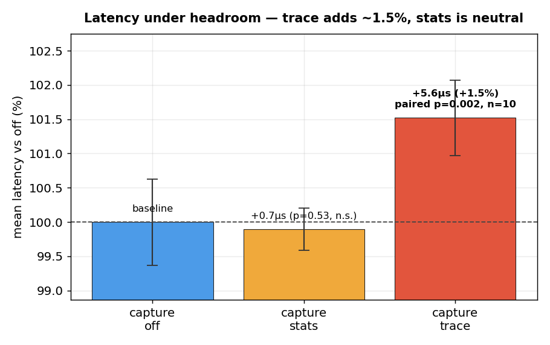
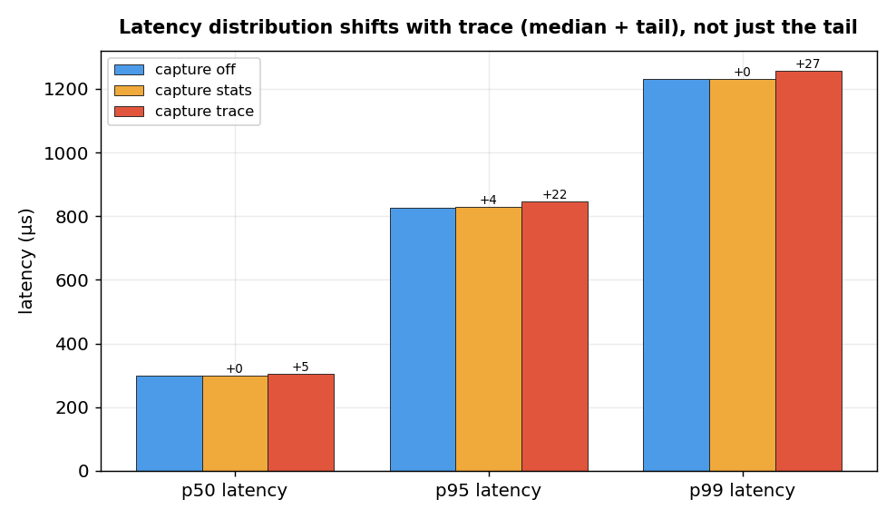

wait_event_timing — corrected benchmark results
Independent overhead measurement of Dmitry Fomin's Oracle-style wait-event timing patch · PostgreSQL 19beta1 · Hetzner CCX43 (16 dedicated vCPU) · v3 — reviewer-corrected2026-06-17
TL;DR
- Throughput: no resolvable overhead, any capture mode — across cached, ClientRead-saturated, and buffer-miss short-wait (20M sub-4µs waits) regimes. Honest framing: a consistent small cost direction (all 6 within-binary deltas negative, sign-test p=0.031) with point estimates ≤0.75%, an upper bound below the measurement floor — not a measured zero.
- Latency:
traceadds a small, real ~1.5%;statsis free. With the design-correct paired test over n=10 cached rounds, trace latency is +5.6µs (+1.5%), positive in 10/10 rounds, p=0.002 — the one effect that survives multiple-comparison correction.statsis latency-neutral (+0.7µs, p=0.53). - The trace cost is an open puzzle, not an explained mechanism. It shifts the whole latency distribution (median +5µs, p99 +27µs) yet leaves throughput untouched — a per-query CPU cost that size would have cut throughput ~7% at saturation, but throughput moves <0.55%. Mechanism unresolved; needs profiling.
- The patched binary with capture off is free; the stub control suggests cross-binary build variance (~1%) that bounds resolving power — though, honestly, a systematic stub advantage can't be fully excluded at this sample size.
Method & how every p-value is computed
- 5 variants.
VANvanilla (no patch) ·STBstub (patched source,--enable-wait-event-timingomitted) ·OFF/STA/TRAthe instrumented binary withwait_event_capture = off/stats/trace. - Gold-standard comparison is within one binary:
OFF→STA→TRAare the same binary and same data cluster, differing only by a runtimeSET— no recompile, no re-initdb, so no code-layout or cluster confound. - Design = randomized block. Each round runs all variants once in randomized order; rounds are blocks (they absorb host drift). The correct test is therefore the paired within-round sign-flip permutation test — every p on this page is that test. (The first cut of this page mistakenly used an unblocked two-sample test, whose n=5 floor of 2/252≈0.008 manufactured false significance.)
- Multiple comparisons. ~12 primary comparisons; Bonferroni α≈0.05/12≈0.004. At n=5 the paired test's own floor is 2/32=0.0625, so nothing at n=5 can clear correction — which is why the one real claim (trace latency) was re-run to n=10 (paired floor 2/1024≈0.002).
- Noise floor. A/A (vanilla ×6, same binary+cluster) CV=0.328% — a best-case lower bound; real interleaved same-binary CVs ran 0.4–1.0%, which only reinforces the “sub-1%, build-variance-limited” framing.
- CPU idle measured by vmstat header name (the original off-by-one is fixed). pgbench
-S, 5 rounds each (latency re-tested at 10),-T120.
Throughput — no resolvable overhead (3 regimes)

| regime (wait profile) | stats vs off | trace vs off | stub vs vanilla¹ |
|---|---|---|---|
| W1 cached point-lookup (CPU-bound) | −0.07% (p=.81) | −0.55% (p=.25) | +0.36% |
| W2 ClientRead-saturated (−c64) | −0.74% (p=.25) | −0.34% (p=.56) | +0.96% |
| W3 buffer-miss short-wait (81% DataFileRead @3.9µs, 20M) | −0.27% (p=.38) | −0.26% (p=.38) | +1.21% |
No individual capture comparison is statistically significant (all paired p≥0.25). But note the direction is consistent: all six within-binary deltas are negative (capture slightly slower), a 6/6 sign pattern (sign-test two-sided p=0.031). So the honest statement is a one-sided upper bound — overhead is small and positive in direction, ≤0.75%, below our resolving power — rather than “indistinguishable from zero,” which would wrongly imply capture could be free-or-faster with equal likelihood.
¹ Stub caveat (hypothesis, not conclusion). The stub should cost zero, yet it is the
fastest of all five variants in all three workloads (P=(1/5)³=0.008 under pure noise; per-workload paired
p as low as 0.06). The most likely explanation is binary code-layout variance (the Mytkowicz effect), and it bounds
how finely any cross-binary comparison can resolve — but a systematic stub advantage cannot be fully excluded at
n=5. Pinning it down would need link-order randomization / LTO-PGO-controlled builds. The clean conclusion does
not depend on it: the same-binary OFF/STA/TRA comparison has no such confound.

Latency under headroom — trace adds ~1.5%, stats is free
trace latency is +5.6µs (+1.5%), positive in 10/10 rounds, p=0.002 — it clears the
~0.004 Bonferroni bar and is the single effect in the whole study that does. stats is
latency-neutral (+0.7µs, 4/10, p=0.53). A wait-heavy replication (W5) is directionally consistent
(trace 4/5 rounds).

Mechanism — an honest open question
Percentiles say the trace cost is not tail jitter: the median shifts +5µs, p95 +22µs,
p99 +27µs — the whole distribution moves. But it is also not a simple per-query CPU cost: +5.6µs
on a cached transaction would be ~7% of throughput at saturation, yet measured throughput moves <0.55% (and W3's
20M waits/run bound any per-wait CPU cost to <0.5µs). A cost that shows in latency-under-headroom but not in
saturated throughput is genuinely puzzling and not explained by this data — the earlier
“DSA-ring-write per wait” wording was wrong and is removed. Resolving it needs perf profiling of the
trace path; that is future work.

The instrumentation really runs

Caveats & what's still open
- Single virtualized 16-vCPU host; SELECT-only; all datasets cache-resident (no true rotational/SSD IO-bound regime).
- Wait mix is ClientRead/DataFileRead dominated. A dedicated LWLock-contention storm and a write/WAL workload remain future work (LWLock was <1% here).
- The trace-latency mechanism is unexplained (latency cost without throughput cost) — needs perf profiling.
- The stub/build-variance interpretation is a hypothesis; a systematic stub advantage isn't fully excluded at n=5.
Reproduce / raw material
- Tracking issue, scripts, raw per-run series, logs: NikolayS/postgres#48
- The patch under test: DmitryNFomin/postgres#2
- Methodology / design brief: index.html